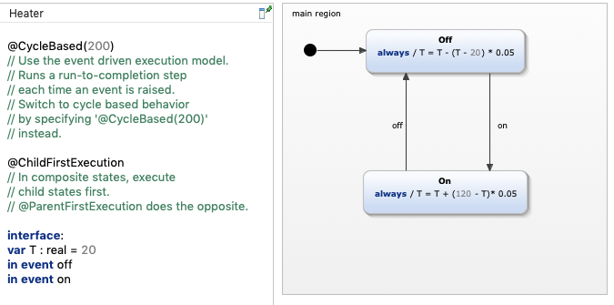
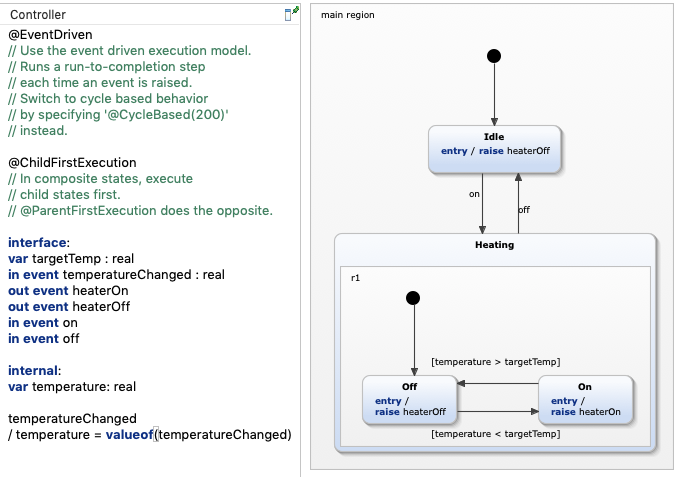
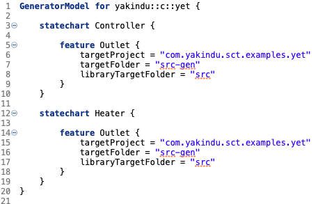

YET - YAKINDU Execution Trace
In this example, a simple system with two statecharts is shown. C code is generated and traced with the YAKINDU Execution Trace that allows to observe the behavior of running state machine code in the simulation view.
The statecharts
The system consists of two statecharts that interact. One represents a simple heating element with a temperature and two states, On and Off. The other statechart is a controller that switches the heater on and off as needed.
 
The new generator model will look similar to this one: 
This generator model works like all others. The only specialty is the generation of two statecharts at once and the usage of the specialized YET-C-generator.
Using YET
For a full introduction to YET, please refer to the documentation. In short, to use YET, you need to use a modified code generator as shown in the generator model above. This code generator calls a function you have to implement that writes the traces to a file or a network socket. This example comes with a socket implementation for UNIX compatible systems (Linux / Mac).
To track the behavior of the state machines, you need to setup the YET trace session.
- Run the statechart trace session: Right-click both statecharts and choose Debug As → YET Tracing. This will start a YET session with default settings. Cancel these with the red square in the simulation view, because we need to change some settings first.
- Right-click again, but in Debug As, choose Debug Configurations.... In this window, navigate to your two new created configurations. In the YET tab, choose TCP tracing and the default port. Click Apply and start both sessions again.
- Both sessions are now running and waiting for traces to be received. To start the actual program, right-click on the project and choose Run as → C/C++ Application. You should now see that there are states active in both simulation settings and values changing. If you click the event
onoroff, you should see the controller statechart switching between Idle and Heating. This is happening in the actual running code.